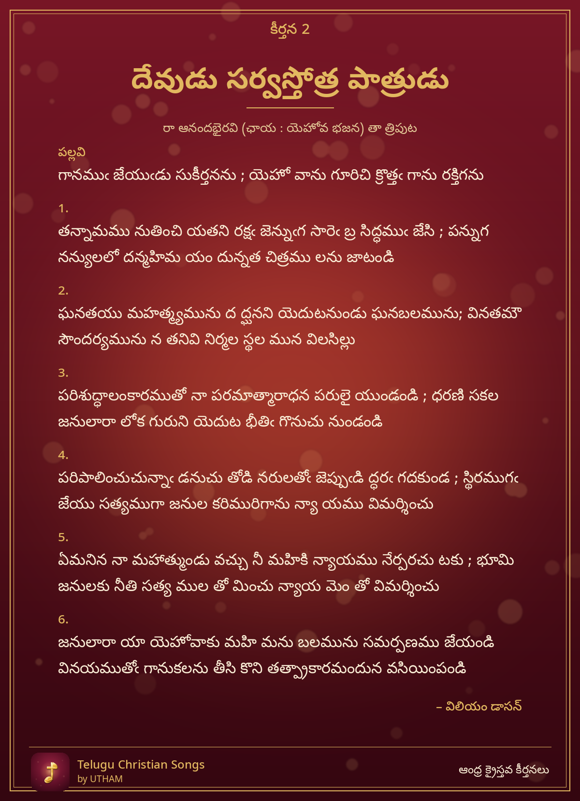

కీర్తన 2 – దేవుడు సర్వస్తోత్ర పాత్రుడు

Devudu Sarvastotra Paatrudu – gaanamu jeyudu sukeertananu ; yeho vaanu goorichi
పల్లవి (Pallavi)
గానముఁ జేయుఁడు సుకీర్తనను ; యెహో వాను గూరిచి క్రొత్తఁ గాను రక్తిగను
చరణం 1
తన్నామము నుతించి యతని రక్షఁ జెన్నుఁగ సారెఁ బ్ర సిద్ధముఁ జేసి ; పన్నుగ నన్యులలో దన్మహిమ యం దున్నత చిత్రము లను జాటండి
చరణం 2
ఘనతయు మహత్మ్యమును ద ద్ఘనని యెదుటనుండు ఘనబలమును; వినతమౌ సౌందర్యమును న తనివి నిర్మల స్థల మున విలసిల్లు
చరణం 3
పరిశుద్ధాలంకారముతో నా పరమాత్మారాధన పరులై యుండండి ; ధరణి సకల జనులారా లోక గురుని యెదుట భీతిఁ గొనుచు నుండండి
చరణం 4
పరిపాలించుచున్నాఁ డనుచు తోడి నరులతోఁ జెప్పుఁడి ద్ధరఁ గదకుండ ; స్థిరముగఁ జేయు సత్యముగా జనుల కరిమురిగాను న్యా యము విమర్శించు
చరణం 5
ఏమనిన నా మహాత్ముండు వచ్చు నీ మహికి న్యాయము నేర్పరచు టకు ; భూమి జనులకు నీతి సత్య ముల తో మించు న్యాయ మెం తో విమర్శించు
చరణం 6
జనులారా యా యెహోవాకు మహి మను బలమును సమర్పణము జేయండి వినయముతోఁ గానుకలను తీసి కొని తత్ప్రాకారమందున వసియింపండి
– విలియం డాసన్